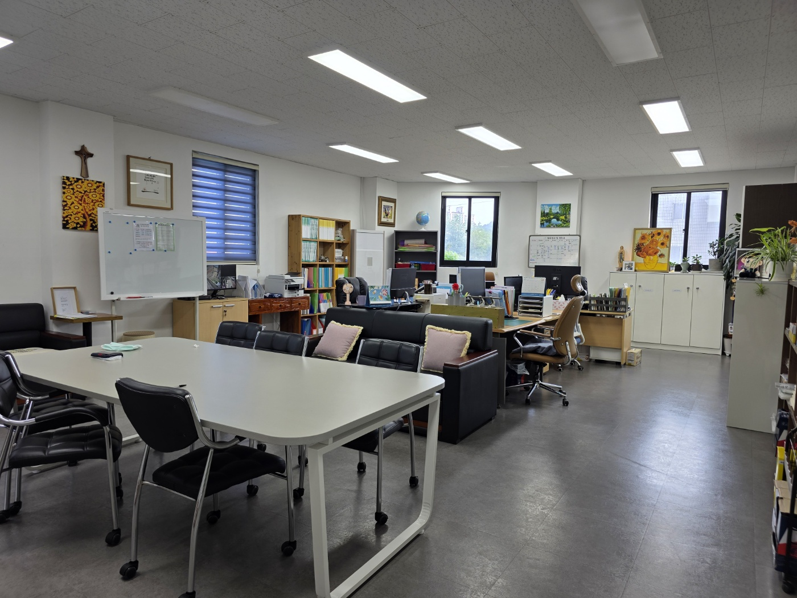
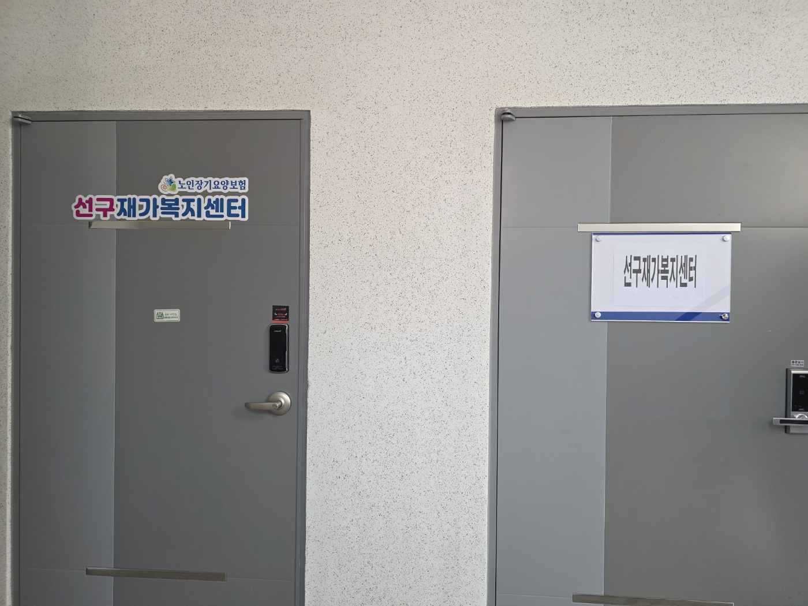
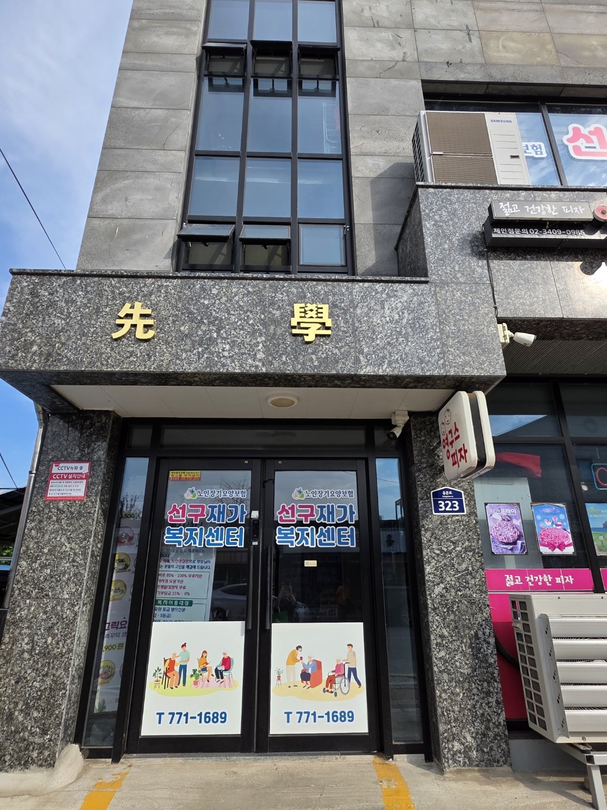

About
선구재가복지센터를 소개합니다
집에서도 전문적인 돌봄을 누릴 수 있도록, 장기요양등급 신청 지원과 치매·파킨슨 전문 케어를 제공합니다.
안정적인 일상으로 이어지는 돌봄을 경험하세요.
센터 한눈에 보기
집에서도 전문 돌봄을 누릴 수 있도록 설계된 재가 서비스 허브
장기요양보험 방문요양·방문목욕을 중심으로 어르신의 신체·정서적 안정을 돕고, 가족의 돌봄 부담을 덜어드립니다.
안전관리, 건강 모니터링, 지역 자원 연계를 통해 집에서도 안심할 수 있는 돌봄 환경을 만듭니다.
-
장기요양등급 대리신청
1~5등급 서류 안내, 인정조사 동행, 결과 확인까지 전담 지원
-
전문 요양보호사 매칭
치매·파킨슨 등 노인성 질환 특화 케어 경험을 갖춘 인력 우선 배정
-
지역 제한 없는 파견
어디든 빠르게 연결되는 전국 단위 요양보호사 네트워크
재가복지센터가 하는 일
명함에 담긴 약속처럼, 어르신과 가족의 든든한 동반자가 되겠습니다.
전문 케어
65세 이상 노인성 질환부터 65세 이하 치매·파킨슨 어르신까지, 일상 돌봄·안전관리·정서 지원을 제공합니다.
상태에 맞는 루틴을 함께 설계합니다.
- 방문요양 · 방문목욕
- 맞춤 케어 플랜
행정·연계 지원
장기요양등급 신청과 인정조사 동행, 결과 안내를 맡아 드리며, 필요한 경우 지역 자원과 병원까지 연계합니다.
돌봄 행정과 실무를 한 번에 해결합니다.
- 등급 신청 대리
- 지역·병원 연계
Space
센터 둘러보기
아늑한 상담실과 청결한 장비를 갖추고 방문 서비스를 지원합니다.


